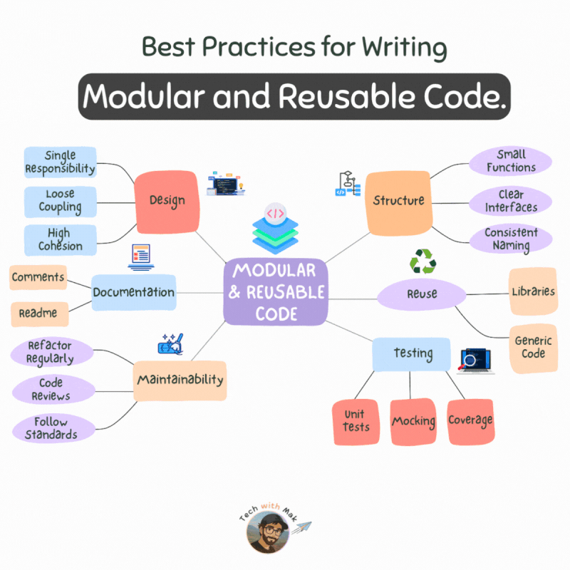

Introducción
La creación de componentes visuales modulares y reutilizables es fundamental en el desarrollo de interfaces modernas y eficientes. En esta página se presentan las ventajas de la modularización, el diseño de componentes con propiedades y eventos gestionables, así como las mejores prácticas para pruebas, documentación, empaquetado e integración en otros proyectos.
1. Ventajas de la modularización
- Reutilización de código: Los componentes se pueden usar en distintos proyectos o pantallas.
- Mantenibilidad: Centraliza la lógica en componentes específicos, facilitando correcciones y mejoras.
- Escalabilidad: Permite construir sistemas complejos agregando componentes sin alterar el sistema base.
- Trabajo colaborativo: Múltiples desarrolladores pueden trabajar en diferentes componentes de forma independiente.
Ejemplo visual

Esquema conceptual de modularización en UI
2. Diseño de componentes con propiedades y eventos
2.1 Propiedades configurables
Las propiedades permiten personalizar un componente desde su exterior sin modificar su código interno. Ejemplo en JavaScript:
class MyButton extends HTMLElement {
constructor() {
super();
const color = this.getAttribute('color') || 'red';
const shadow = this.attachShadow({ mode: 'open' });
const button = document.createElement('button');
button.textContent = this.textContent;
const style = document.createElement('style');
style.textContent = `
button {
background-color: ${color};
color: white;
border: none;
padding: 10px 20px;
border-radius: 8px;
cursor: pointer;
font-size: 16px;
transition: background-color 0.3s;
}
button:hover {
background-color: #4338ca;
}
`;
shadow.appendChild(style);
shadow.appendChild(button);
button.addEventListener('click', () => {
alert(`Has hecho click en "${button.textContent}"`);
});
}
}
customElements.define('my-button', MyButton);Uso del componente:
<my-button color="blue">Botón personalizado</my-button>
<my-button>Otro botón personalizado</my-button>2.2 Eventos gestionables por el usuario
Los eventos personalizados permiten la comunicación entre elementos. Por ejemplo, un botón puede enviar datos a un contador:
<div class="ejemplo">
<h3>Ejemplo de contador con evento personalizado</h3>
<h2>Clicks totales: <span id="contador">0</span></h2>
<button id="btnIncremento">Haz click aquí</button>
</div>const boton = document.getElementById('btnIncremento');
const contador = document.getElementById('contador');
let totalClicks = 0;
const eventoClick = new CustomEvent('botonPulsado', {
detail: { valor: 1 }
});
document.addEventListener('botonPulsado', (e) => {
totalClicks += e.detail.valor;
contador.textContent = totalClicks;
});
boton.addEventListener('click', () => {
document.dispatchEvent(eventoClick);
});Ejemplo de contador con evento personalizado
Clicks totales: 0
3. Pruebas y documentación de componentes
3.1 Pruebas antes de integrar un componente
- Visualización: comprobar que se renderiza correctamente con diferentes configuraciones.
- Interacción: asegurarse de que los eventos se lanzan y capturan correctamente.
- Comprobación de errores: observar su comportamiento ante entradas inválidas o estados inesperados.
3.2 Generación de documentación técnica
- Descripción funcional
- Propiedades configurables (nombre, tipo, valor por defecto)
- Eventos disponibles (nombre, condiciones de activación)
- Ejemplo de uso en un entorno real
- Requisitos técnicos (framework, versión mínima)
4. Reutilización e integración en otras interfaces
4.1 Empaquetado del componente
- Java: archivo
.jarcon todas las clases y recursos. - JavaScript: paquete
npmo módulo ESM (.mjs).
4.2 Importación en otros proyectos
JavaScript: se puede usar directamente en HTML o importar como módulo:
<my-button color="green">Botón reutilizable</my-button>
<script type="module">
import './my-button.js';
</script>Es importante verificar que los estilos y dependencias sean compatibles con la aplicación donde se integra.
Herramientas para diseñar componentes
Java y JavaFX
- Scene Builder: editor visual para crear interfaces FXML.
- FXML + Java: separa la estructura visual de la lógica.
- Control o Region: clases base para personalizar controles y regiones.
JavaScript
- Web Components: API del navegador para definir etiquetas propias.
- React: componentes funcionales o de clase que reciben props.
- Vue: componentes con plantilla, lógica y estilos.
La herramienta se elige según el proyecto. En todos los casos, el objetivo es encapsular estructura, estilo y comportamiento para poder reutilizar el componente.
Propiedades configurables en distintos entornos
Las propiedades permiten configurar un componente desde fuera sin cambiar su implementación interna.
React
function MyButton({ text = 'Aceptar', color = 'blue' }) { // Recibe valores configurables
return <button style={{ backgroundColor: color }}>{text}</button>; // Muestra el texto y aplica el color
} // Finaliza el componente
<MyButton text="Guardar" color="green" /> // Configura una instanciaJavaFX
public class MyPanel extends Region { // Define un componente JavaFX reutilizable
private final StringProperty title = // Declara una propiedad observable
new SimpleStringProperty(this, "title", "Panel"); // Asigna su valor por defecto
public String getTitle() { return title.get(); } // Lee el valor actual
public void setTitle(String value) { title.set(value); } // Cambia el valor
public StringProperty titleProperty() { return title; } // Permite enlazar la propiedad
} // Finaliza la clase del componenteEn JavaFX, propiedades como StringProperty y BooleanProperty pueden
observarse o enlazarse (binding) para mantener sincronizados varios elementos.
Eventos gestionables en JavaScript y JavaFX
JavaScript
Un componente puede emitir un evento personalizado y comunicar información mediante
detail.
const evento = new CustomEvent('guardado', { // Crea un evento propio
detail: { id: 12 }, // Adjunta información del registro
bubbles: true // Permite que el evento suba por el DOM
}); // Finaliza la configuración del evento
elemento.dispatchEvent(evento); // Emite el evento para que otros elementos lo escuchenJavaFX
Los manejadores permiten reaccionar a acciones del usuario, como pulsar un botón.
guardarButton.setOnAction(event -> { // Registra la acción al pulsar el botón
System.out.println("Datos guardados"); // Ejecuta la respuesta al evento
}); // Finaliza el registro del manejadorEn React se suele pasar una función callback, por ejemplo onSave; en Vue se puede emitir
un evento que el componente padre escucha con @save o @click.
Pruebas individuales y documentación técnica
- Visualización: revisar la apariencia con valores por defecto y configuraciones distintas.
- Interacción: probar acciones y confirmar que se emiten y gestionan los eventos esperados.
- Errores: probar entradas inválidas, datos ausentes y estados inesperados.
- Java: probar el componente en una escena JavaFX sencilla.
- JavaScript: usar una página HTML de prueba o herramientas como Jest, Cypress o Vitest.
La documentación debe incluir descripción funcional, propiedades (nombre, tipo y valor por defecto), eventos (nombre y activación), ejemplo de uso y requisitos técnicos (framework y versión mínima). Puede publicarse en Markdown/README, HTML o JavaDoc.
Empaquetar, versionar e integrar
- Java: empaquetar clases compiladas y recursos (FXML, CSS) en una librería
.jar; añadirla como dependencia en Maven, Gradle o desde el IDE. - JavaScript: publicar un paquete npm o distribuir un módulo ESM; instalarlo con npm o incluirlo como script.
- Incluir fuentes, versión minificada si existe, README y definición de versión
(
package.jsonoMANIFEST.MF). - Importar el componente en el proyecto destino y usarlo desde JavaFX/FXML o desde el DOM.
<!-- La etiqueta usa el componente registrado por el módulo -->
<mi-boton texto="Aceptar"></mi-boton>
<script type="module"> // Carga el módulo JavaScript
import './mi-boton.js'; // Registra el componente en el navegador
</script> <!-- Termina la carga del módulo -->Posibles problemas: versiones incompatibles de Java, Node o frameworks; dependencias ausentes o duplicadas; rutas incorrectas de CSS/recursos; diferencias de estilos; y API distintas entre versiones. Comprueba las versiones y prueba la integración antes de distribuir.
¿Qué has aprendido?
- Los componentes personalizados ayudan a crear interfaces modulares, reutilizables y mantenibles.
- JavaFX permite extender clases como
Region; JavaScript ofrece Web Components, React y Vue. - Las propiedades configuran un componente y los eventos comunican acciones al exterior.
- Las pruebas individuales comprueban visualización, interacción y respuesta ante errores.
- La documentación y el empaquetado facilitan que otros desarrolladores integren el componente.
- La integración requiere comprobar versiones, dependencias, requisitos y estilos.
Antes de reutilizar un componente en otro proyecto, consulta su documentación, verifica los requisitos y prueba su funcionamiento en el entorno destino.
Actividad 1: explicar las ventajas de modularizar
Enunciado: redacta un texto breve sobre las ventajas de la modularización de
componentes personalizados e incluye un ejemplo en JavaScript, como
<my-button>.
Entrega: explicación de las ventajas con un ejemplo de componente reutilizable en JavaScript.
Cómo resolverla
- Explica reutilización, mantenibilidad, escalabilidad y colaboración.
- Para cada ventaja, describe qué mejora en el desarrollo del proyecto.
- Incluye una etiqueta personalizada sencilla, como
<my-button>, y explica dónde se reutilizaría en una página web.
<!-- Ejemplo de uso de una etiqueta reutilizable -->
<my-button color="green">Guardar</my-button>class MyButton extends HTMLElement {
constructor() {
super();
const shadow = this.attachShadow({ mode: 'open' });
const button = document.createElement('button');
button.style.backgroundColor = this.getAttribute('color') || 'green';
button.append(document.createElement('slot'));
shadow.append(button);
}
}
customElements.define('my-button', MyButton);Para alcanzar el nivel excelente: explica las cuatro ventajas con ejemplos claros basados en componentes JavaScript; no te limites a enumerarlas.
Actividad 2: diseñar propiedades y eventos
Enunciado: diseña un componente personalizado, real o ficticio, y describe dos propiedades configurables (nombre, tipo y valor por defecto) y dos eventos gestionables (nombre y cuándo se activan).
Ejemplo de una propiedad
const propiedades = { // Define las opciones públicas del componente
titulo: { tipo: 'String', valorPorDefecto: 'Aviso' } // Describe una propiedad configurable
}; // Fin del ejemplo; añade otra propiedad para completar la actividadAhora completa el diseño
- Elige un componente y explica para qué sirve.
- Añade una segunda propiedad e indica su tipo, valor por defecto y un ejemplo de configuración.
- Define dos eventos con nombre y condición de activación (por ejemplo, confirmar y cancelar).
- Describe cómo escucharía esos eventos el componente que lo contiene.
Una respuesta completa distingue las propiedades que configuran el componente de los eventos que comunican algo que ha ocurrido.
Actividad 3: probar y documentar un componente
Enunciado: simula que has creado un componente y describe tres pruebas individuales (visualización, interacción y errores). Prepara documentación técnica básica con descripción, propiedades, eventos y ejemplo de uso.
Plantilla para las tres pruebas
- Visualización: configuración usada, resultado esperado y resultado observado.
- Interacción: acción realizada, evento esperado y resultado observado.
- Errores: dato inválido o estado inesperado, respuesta esperada y resultado observado.
Plantilla de documentación
- Nombre y descripción funcional del componente.
- Propiedades: nombre, tipo y valor por defecto.
- Eventos: nombre y condición de activación.
- Ejemplo de uso y requisitos técnicos (entorno y versión mínima).
Importante: no basta con decir “funciona”; anota qué probaste, qué esperabas y qué ocurrió. Puedes presentar la documentación en Markdown o HTML y usar comentarios JSDoc para describir el componente JavaScript.
Actividad 4: empaquetar e integrar el componente
Enunciado: explica cómo empaquetar e importar un componente en otro proyecto. Indica un formato JavaScript, como un paquete npm o un módulo ESM, el proceso de integración y los problemas que podrían aparecer.
Guion para la respuesta
- Indica si el componente es un módulo JavaScript o un Web Component y el formato elegido.
- Enumera qué archivos, recursos y dependencias deben incluirse.
- Explica cómo se instala/importa y cómo se usa en el proyecto destino.
- Indica la versión y los requisitos técnicos.
- Prevé problemas de compatibilidad, recursos, estilos o dependencias y cómo verificarlos.
<!-- Carga el módulo que registra el componente -->
<script type="module"> // Indica que se importa un módulo JavaScript
import './my-button.js'; // Carga y registra el componente en este proyecto
</script> <!-- Finaliza la importación -->Entrega sugerida: describe el paquete, documenta versión y requisitos, añade un ejemplo de importación y cierra con una lista de comprobaciones de integración.